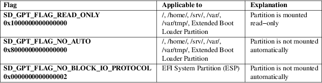

systemd-gpt-auto-generator − Generator for automatically discovering and mounting root, /home/, /srv/, /var/ and /var/tmp/ partitions, as well as discovering and enabling swap partitions, based on GPT partition type GUIDs
/usr/lib/systemd/system−generators/systemd−gpt−auto−generator
systemd−gpt−auto−generator is a unit generator that automatically discovers root, /home/, /srv/, /var/, /var/tmp/, the EFI System Partition, the Extended Boot Loader Partition and swap partitions and creates mount and swap units for them, based on the partition type GUIDs of GUID partition tables (GPT), see UEFI Specification [1] , chapter 5. It implements the Discoverable Partitions Specification [2] . Note that this generator has no effect on non−GPT systems, and on specific mount points that are directories already containing files. Also, on systems where the units are explicitly configured (for example, listed in fstab(5)), the units this generator creates are overridden, but additional implicit dependencies might be created.
This generator will only look for the root partition on the same physical disk where the EFI System Partition (ESP) is located. Note that support from the boot loader is required: the EFI variable LoaderDevicePartUUID of the 4a67b082−0a4c−41cf−b6c7−440b29bb8c4f vendor UUID is used to determine from which partition, and hence the disk from which the system was booted. If the boot loader does not set this variable, this generator will not be able to autodetect the root partition. See the Boot Loader Interface [3] for details.
Similarly, this generator will only look for the other partitions on the same physical disk as the root partition. In this case, boot loader support is not required. These partitions will not be searched for on systems where the root file system is distributed on multiple disks, for example via btrfs RAID.
systemd−gpt−auto−generator is useful for centralizing file system configuration in the partition table and making configuration in /etc/fstab or on the kernel command line unnecessary.
This generator looks for the partitions based on their partition type GUID. The following partition type GUIDs are identified:
Table 1. Partition
Type GUIDs
This generator understands the following attribute flags for
partitions:
Table 2. Partition Attribute Flags

The /home/, /srv/, /var/ and /var/tmp/ partitions may be encrypted in LUKS format. In this case, a device mapper device is set up under the names /dev/mapper/home, /dev/mapper/srv, /dev/mapper/var and /dev/mapper/tmp. Note that this might create conflicts if the same partition is listed in /etc/crypttab with a different device mapper device name.
When systemd is running in the initrd the / partition may be encrypted in LUKS format as well. In this case, a device mapper device is set up under the name /dev/mapper/root, and a sysroot.mount is set up that mounts the device under /sysroot. For more information, see bootup(7).
The root partition can be specified by symlinking /run/systemd/volatile−root to /dev/block/$major:$minor. This is especially useful if the root mount has been replaced by some form of volatile file system (overlayfs).
Mount and automount units for the EFI System Partition (ESP) are generated on EFI systems. The ESP is mounted to /boot/ (except if an Extended Boot Loader partition exists, see below), unless a mount point directory /efi/ exists, in which case it is mounted there. Since this generator creates an automount unit, the mount will only be activated on−demand, when accessed. On systems where /boot/ (or /efi/ if it exists) is an explicitly configured mount (for example, listed in fstab(5)) or where the /boot/ (or /efi/) mount point is non−empty, no mount units are generated.
If the disk contains an Extended Boot Loader partition, as defined in the Boot Loader Specification [4] , it is made available at /boot/ (by means of an automount point, similar to the ESP, see above). If both an EFI System Partition and an Extended Boot Loader partition exist the latter is preferably mounted to /boot/. Make sure to create both /efi/ and /boot/ to ensure both partitions are mounted.
When using this generator in conjunction with btrfs file systems, make sure to set the correct default subvolumes on them, using btrfs subvolume set−default.
If the system was booted via systemd-stub(7) and the stub reported to userspace that the kernel image was measured to a TPM2 PCR, then any discovered root and /var/ volume identifiers (and volume encryption key in case it is encrypted) will be automatically measured into PCR 15 on activation, via systemd-pcrfs@.service(8).
systemd−gpt−auto−generator implements systemd.generator(7).
systemd−gpt−auto−generator understands the following kernel command line parameters:
systemd.gpt_auto, rd.systemd.gpt_auto
Those options take an optional boolean argument, and default to yes. The generator is enabled by default, and a negative value may be used to disable it.
root=, rootfstype=, rootflags=
When root= is used with the special value "gpt−auto" (or if the parameter is not used at all), automatic discovery of the root partition based on the GPT partition type is enabled. Any other value disables this logic.
The rootfstype= and rootflags= are used to select the file system type and options when the root file system is automatically discovered.
rw, ro
Mount the root partition read−write or read−only initially.
Note that unlike most kernel command line options these settings do not override configuration in the file system, and the file system may be remounted later. See systemd-remount-fs.service(8).
systemd(1), systemd.mount(5), systemd.swap(5), systemd-fstab-generator(8), systemd-cryptsetup@.service(8), systemd-pcrfs@.service(8), machine-id(5), cryptsetup(8), fstab(5), btrfs(8)
|
1. |
UEFI Specification |
https://uefi.org/specifications
|
2. |
Discoverable Partitions Specification |
https://uapi-group.org/specifications/specs/discoverable_partitions_specification
|
3. |
Boot Loader Interface |
https://systemd.io/BOOT_LOADER_INTERFACE
|
4. |
Boot Loader Specification |
https://uapi-group.org/specifications/specs/boot_loader_specification